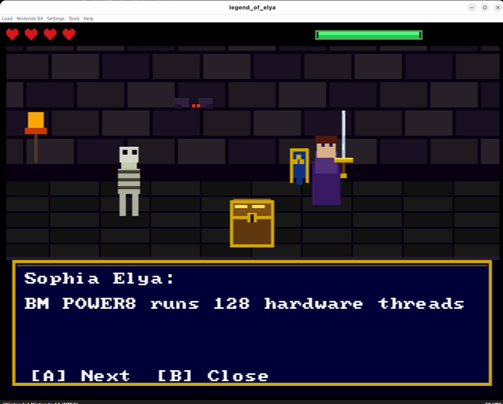
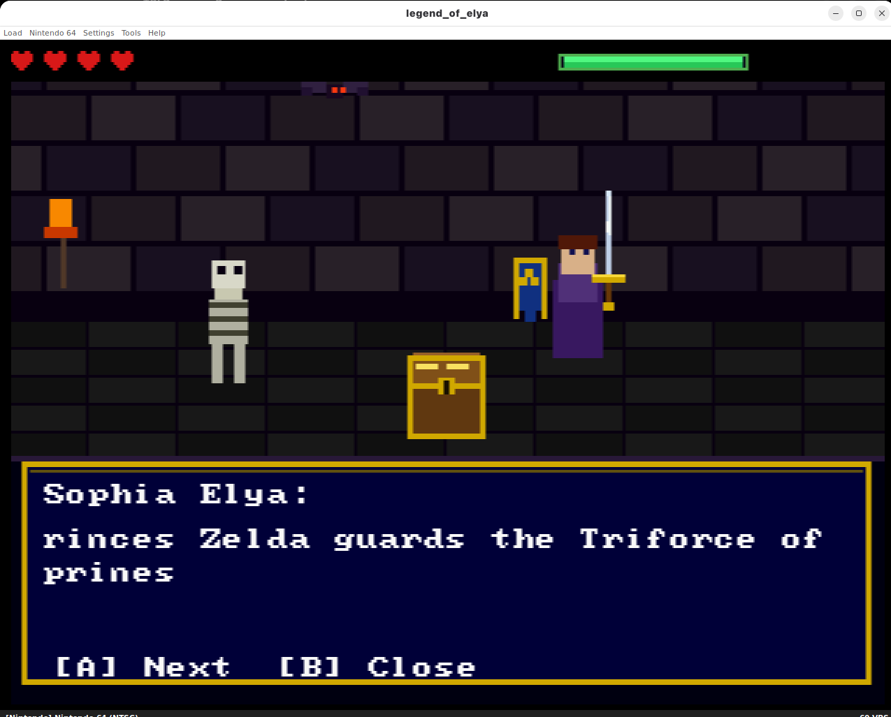

1.23 tokens a second, on a chip from 1996. The project's own last commit deleted a bigger, fake number.
A Nintendo 64 — a console with a 93.75 MHz CPU, designed years before "large language model" meant anything — is running a real transformer: real matrix multiplication, real softmax, real attention, generating text one byte at a time with no cloud, no network stack, and in the current build's case, no operating system doing any of the heavy lifting either. The project shipped a number for how fast it runs. Then the builder found the number was fake, said so in public, and replaced it with one 49 times smaller.
Source & credit: this is the independent work of Scott Boudreaux, a solo builder working as Elyan Labs (GitHub @Scottcjn). The project is called Legend of Elya, part of a broader series called Transformers on Retro Game Consoles on Hackaday.io, which also runs sibling ports on NES, SNES, Game Boy Color and Sega Genesis. Source is MIT-licensed: github.com/Scottcjn/legend-of-elya-n64.

What's actually running, and on what
Legend of Elya is an original N64 homebrew ROM, built with the libdragon homebrew SDK, playable in the ares emulator or on real hardware via an EverDrive 64 flash cart. Walk up to the NPC Sophia Elya and press A, and the console's own VR4300 MIPS III CPU — 93.75 MHz, no GPU compute, no NPU, nothing resembling AI-accelerator silicon of any kind — runs a full forward pass through an 8-layer transformer: embedding lookup, attention, feed-forward, logits, sampling, all implemented from scratch in C for a chip that predates the word "transformer" in this sense by two decades. The repo's own architecture table is specific: 6,356,992 parameters, 256-dimensional embeddings, 8 attention heads, a 128-token context window, a 256-entry byte-level ASCII vocabulary. Weights are stored in a custom SEQ2 ternary format — 2-bit weights plus float16 block scales — dequantized on the fly per matmul, with every activation and accumulation computed in genuine float32 on the R4300i's own FPU.
The engineering underneath that is not a toy port. The R4300i has no trunc.w.s instruction path the code can rely on for float-to-int casts inside the hot loop, so the exp() implementation uses a custom range-reduced Taylor series that avoids float-to-int casts entirely. RMS normalization uses the Quake III fast-inverse-square-root bit trick. The weight file is exported little-endian from Python but the N64 is big-endian, so header fields and float16 scales get explicit byte-swap handling. Random sampling seeds itself off the CPU's own hardware jitter — the MIPS CP0 Count register XOR'd against the frame counter — so two runs of the same prompt don't produce identical output, a small detail that only matters because there's no external source of randomness to reach for on a console with no network connection to phone home to.

Two generations, and which one is actually proven on real silicon
It's worth being precise about a distinction the project itself is careful to draw. There are two models here, and only the older, smaller one has been verified running on a physical console. In February 2026, an earlier 819K-parameter, Q8-quantized build ran on real N64 hardware over an EverDrive 64 cart — filmed as proof, not simulated. The current, larger 6.36M-parameter ternary model — the one with the architecture table above — has, per the project's own documentation, not yet been run on real silicon. Every number for it comes from the ares emulator. The project states this without hedging: "Nothing here has been run on real N64 silicon."
The tok/s counter was wrong, and the fix is the interesting part
For months, this project's own README, its video description, its lab homepage, and its launch article all quoted a headline speed of roughly 60 tokens a second — with one video specifically claiming 61.8. On August 13, 2026, Boudreaux published a full self-audit that retracted it. The real figure, measured the same way, on the same build: 1.23 tokens a second.
The bug is worth walking through because it's a clean example of a benchmark that looks like a measurement but isn't one. The on-screen counter computed tokens_generated × 60.0 / elapsed_frames. The game loop calls exactly one token-generation step per iteration of its main loop, and both the token counter and the frame counter increment by exactly 1 on every one of those iterations — so their ratio is pinned at 1 by construction, and the whole expression collapses to the literal constant 60.0, regardless of how long any individual step actually took. The 61.8 figure in the video description was the same bug's off-by-one variant: the first-token counter got set to 1 in the same frame that the start-frame counter was zeroed, producing 60 × (k+1) / k, which converges toward 60 from above — at k = 33, that's 60 × 34 / 33 = 61.818, matching the published number to the digit. As the project's own writeup puts it: "The 60.0f encodes an assumption that one loop iteration takes 1/60 s. It takes 0.81 s." Nothing about the original counter depended on elapsed time at all — it wasn't a miscalibrated measurement, it was a constant dressed up as one, and it would have reported "~60" on hardware running at any real speed whatsoever.
| Build | Measured throughput |
|---|---|
| Published, pre-audit ("~60 tok/s" / "61.8 tok/s") | Fabricated — counter was a hardcoded constant |
| Scalar CPU (corrected, ares emulator) | 1.23 tok/s |
| RSP vector-overlay (corrected, ares emulator) | 2.19 tok/s (1.78x scalar) |
Source: Scottcjn/legend-of-elya-n64, docs/N64_RATE_FINDINGS.md, dated 2026-08-13. Both corrected figures are ares-emulator measurements, not real hardware.
The RSP figure comes from offloading part of the workload to the N64's Reality Signal Processor — the same vector co-processor the console's games used for 3D transforms and audio mixing in the 1990s, repurposed here for matrix-vector arithmetic — for a real, reproducible 1.78x speedup over the scalar CPU path, verified the project says "across three independent denominators," not a single lucky run.
Why the correction matters more than the number
1.23 tokens a second is not a fast model by any standard this blog normally covers — plenty of microcontroller builds we've featured, running on hardware built decades after the N64, clear that pace by a wide margin. That's not really the point. The point is what happened when the number was wrong: it reached four separate public places, and instead of quietly editing a README and moving on, the correction is published as its own long-form section, kept visible, with the exact buggy code shown, the exact arithmetic that produced the false 61.8 walked through digit by digit, and the true number left standing next to the retracted one rather than replacing it silently. That's a rarer thing in this space than a fast benchmark is — most inflated AI performance claims never get a public post-mortem from the person who published them, they just quietly stop being repeated.
Why it belongs in "Edge in the Wild"
Every project we've covered in this series pushes on-device inference toward smaller, cheaper, more constrained hardware — an ESP32 here, a Raspberry Pi there. This one pushes on a different axis entirely: how old can the hardware be and still run something recognizable as a transformer's actual math, not a lookup table pretending to be one. A console from 1996, with no operating system to speak of in this ROM, no filesystem, no network hardware even present on the board, running byte-level attention over a 128-token window — that's about as close to "the model runs where the data already is, full stop, nothing else involved" as this series has found. It's also, this time, packaged with a genuinely rare kind of honesty about its own limits: which model is emulator-only, which is hardware-verified, and a public correction of a fabricated number that most projects would have just let ride.
Discuss this on the forum → — running anything stranger than this on hardware nobody expects? Point us at the repo.